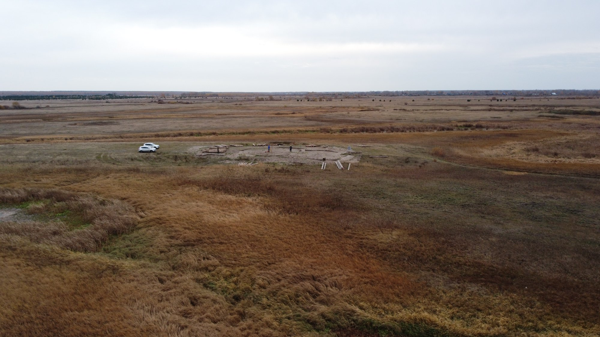
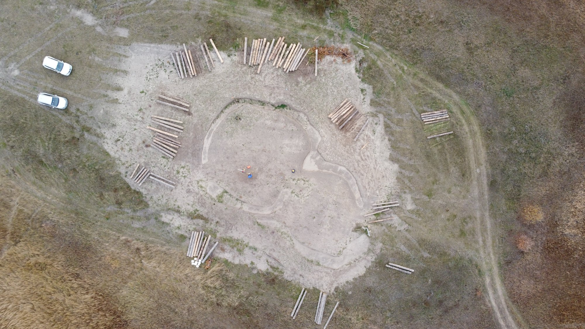
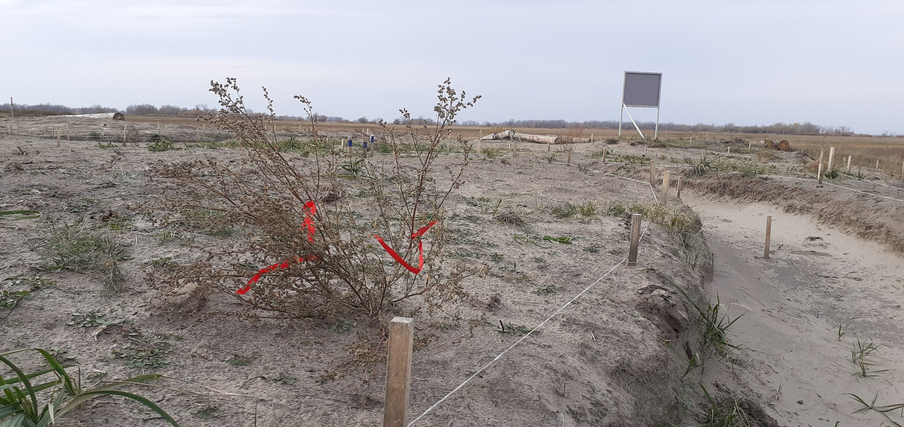
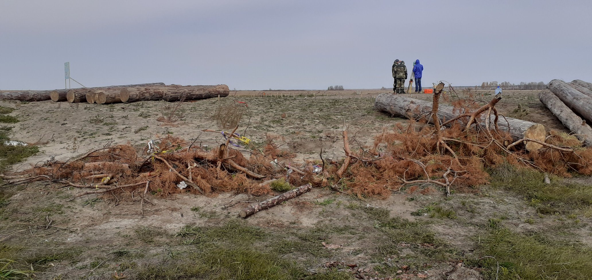

07.10.2020 г., прекрасный солнечный день. ПАСМУРНЫЙ ДЕНЬ В КУРГАНСКОМ ПРИТОБОЛЬЕ (2). В зале, посвященном будущем археологическому парку, происходит разговор на тему, которая волнует и музейщиков, и археологов, и казаков, и священников, и местных обывателей тоже… Рядом стоит макет святилища «Савин – 1», чей облик был реконструирован в конце девяностых московским археологом Тамилой Потемкиной. Она работала с этим памятником много лет, проводила там археоастрономические эксперименты, проверяла, работают ли все эти гномоны и прочие указатели на астрономические события, если их поместить в соответствующих местах памятника. Изготовлены сайт, составлена антология статей о «Савине», на рекламных листочках написано «Святилище обсерватория Савин – 1. Российский Стоунхендж 4,5 тыс. лет». (Посетите сайт Савина)
Параллель со Стоунхенджем последовательно проводилась с девяностых годов: «Кто знает, не окажется ли этот район широкой поймы Тобола своего рода Солсберийской равниной в Англии. Ведь Савин имеет много общего и со Стоунхенджем (на первом его этапе), и с другими хенджами Англии и ронделами Европы III тыс. до н. э. Это – и круговая планировка, и общая архитектура с присутствием валов, предварительно размеченных на местности, и наличие наиболее значимых солнечных и лунных ориентиров, и следы культово-обрядовой практики – кострищ, костей животных и людей, керамики, орудий труда, предметов культового характера и т. д. Все говорит о том, что в системе идеологических представлений первобытного общества данные сооружения предназначались для выполнения сходных задач. А значит, люди, построившие их, были близки по уровню духовной культуры, хотя и жили на большом удалении друг от друга.» (Статья Т. Потемкиной «Зауральский Стоунхендж», 1998).
Археологи к этому привычны, в подборке фотографий с экспедиции 1997 г. есть фото – «Участники экспедиции на Савине наблюдают за “космоэнергетами”», но тут последствия несколько выходят за пределы археологического коммьюнити. Сейчас в разговорах о святилище чаще упоминают не Стоунхендж, а Аркаим, превратившийся в мекку искателей неконвенциональной духовности. Чувствуется, это любимая тема для разговоров – директор музея и курганские археологи рассказывали об этом очень оживленно. Звучали слова «жертвоприношения», «оккультисты», «казачество», «НТВ», «ведьмы», «равноденствие», «Тамара Глоба», «молебен» и т.д.
Курганский Стоунхендж «Савин–1» – остров в сто квадратных метров в заболоченной лесостепи. От него хорошо видны соседние деревни. На юго-западе, у Тобола, показывается серыми шиферными крышами Бузан, на северо-востоке – Зюзино, крыши там поновей, синее железо, профнастил. Кажется, между еще блестят какие-то фермерские хозяйства. У археологов были свои дела, а в промежутках я задавал им вопросы и запускал над святилищем коптер. Насколько я понял, на «Савине–1» планируется in situ выстроить реконструкцию Потемкиной, но только капитально, с использованием толстых бревен (в 1997 г. там устанавливали жерди какие-то). Вокруг были разложены эти самые бревна, с цифрами, все напоминало строительство бани. Дул сильнейший ветер, довольно холодный, пришлось даже надеть дождевик, хорошо зарекомендовавший себя в Заболотье.
Беседы с И. и Л. про появления на раскопе «неоязычников» и «биоэнергетов» – это самый распространенный у археологов нарратив (наблюдения за медитациями, за жертвоприношениями, за проповедями и т.п.), про спиленную сосенку, которой «неоязычники» приносили жертвы – ленточки, в т.ч. георгиевские (теперь люди стали вязать ленточки на кустики и траву)… По словам археологов, «неоязычники» – преимущественно женщины, иногда очень красивые, не местные, приезжающие издалека. В выходные бывает до десяти – пятнадцати машин. Звучат слова «эра Водолея», «мировое правительство», «Билл Гейтс», «объединимся с Китаем». Шумит ветер. Висящий в воздухе на заднем плане орлан американского типа вдруг ныряет и взмывает вверх с какой-то мышью.
Особенно интересная часть разговора – планы областных властей развивать археологический туризм. В «этих местах» планируется (но пока не особенно финансируется) например, насыпать в специально отведенном месте два новодельных кургана, которые, с одной стороны, отражали бы археологическое богатство района, с другой – служили бы ландшафтной манифестацией геральдического изображения с герба Курганской области, этакий административный лэнд-арт.




Оригинальный текст: https://www.facebook.com/noctu.vigilus/posts/3562950037263618